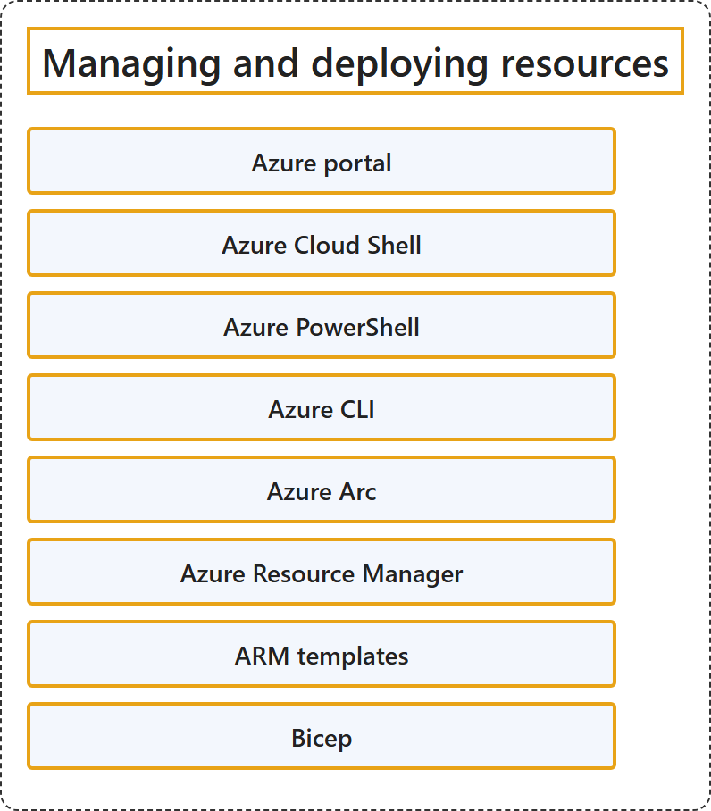

20.3 Managing and Deploying Resources
Classification

Glossary
| Term | Definition | 中文翻译 | Source |
|---|---|---|---|
| Azure portal Azure 门户 |
"The Azure portal is a web-based, unified console that you can use to create and manage all your Azure resources." | Azure 门户是一个基于 Web 的统一控制台，可用来创建和管理你的所有 Azure 资源。 | Microsoft, 2026g, para. 1 |
| Azure Cloud Shell Azure Cloud Shell |
"Azure Cloud Shell is an interactive, authenticated, browser-accessible terminal for managing Azure resources." | Azure Cloud Shell 是一个交互式、经过身份验证、可通过浏览器访问的终端，用于管理 Azure 资源。 | Microsoft, 2026b, para. 1 |
| Azure PowerShell Azure PowerShell |
"Azure PowerShell is the product name for the collection of official Microsoft PowerShell modules for managing Azure resources." | Azure PowerShell 是官方 Microsoft PowerShell 模块集合的产品名称，这些模块用于管理 Azure 资源。 | Microsoft, 2026c, para. 1 |
| Azure CLI Azure CLI |
"The Azure Command-Line Interface (CLI) is a cross-platform command-line tool to connect to Azure and execute administrative commands on Azure resources." | Azure 命令行界面 (CLI) 是一种跨平台命令行工具，用于连接到 Azure 并执行管理命令，对象是 Azure 资源。 | Microsoft, 2026f, para. 1 |
| Azure Arc Azure Arc |
"Azure Arc simplifies governance and management by delivering a consistent multicloud and on-premises management platform." | Azure Arc 通过提供一致的多云和本地管理平台来简化治理和管理。 | Microsoft, 2025, para. 2 |
| Azure Resource Manager Azure 资源管理器 |
"Azure Resource Manager is the deployment and management service for Azure. It provides a management layer that helps you to create, update, and delete resources in your Azure account." | Azure 资源管理器是 Azure 的部署和管理服务。它提供一个管理层，帮助你在 Azure 帐户中创建、更新和删除资源。 | Microsoft, 2026d, para. 1 |
| ARM templates ARM 模板 |
(context) "To implement infrastructure as code for your Azure solutions, use Azure Resource Manager templates (ARM templates)." | （语境）要为 Azure 解决方案实现基础结构即代码，请使用 Azure 资源管理器模板 (ARM 模板)。 | Microsoft, 2026a, para. 3 |
| Bicep Bicep |
"Bicep is a domain-specific language that uses declarative syntax to deploy Azure resources." | Bicep 是一种领域特定语言，使用声明性语法来部署 Azure 资源。 | Microsoft, 2026e, para. 1 |
References
- Microsoft. (2025, August 26). Azure Arc overview. Microsoft Learn. https://learn.microsoft.com/en-us/azure/azure-arc/overview
- Microsoft. (2026a, June 26). What are ARM templates? Microsoft Learn. https://learn.microsoft.com/en-us/azure/azure-resource-manager/templates/overview
- Microsoft. (2026b, August 7). What is Azure Cloud Shell? Microsoft Learn. https://learn.microsoft.com/en-us/azure/cloud-shell/overview
- Microsoft. (2026c, October 6). What is Azure PowerShell? Microsoft Learn. https://learn.microsoft.com/en-us/powershell/azure/what-is-azure-powershell
- Microsoft. (2026d, August 4). What is Azure Resource Manager? Microsoft Learn. https://learn.microsoft.com/en-us/azure/azure-resource-manager/management/overview
- Microsoft. (2026e, January 8). What is Bicep? Microsoft Learn. https://learn.microsoft.com/en-us/azure/azure-resource-manager/bicep/overview
- Microsoft. (2026f, September 1). What is the Azure CLI? Microsoft Learn. https://learn.microsoft.com/en-us/cli/azure/what-is-azure-cli
- Microsoft. (2026g, January 26). What is the Azure portal? Microsoft Learn. https://learn.microsoft.com/en-us/azure/azure-portal/azure-portal-overview